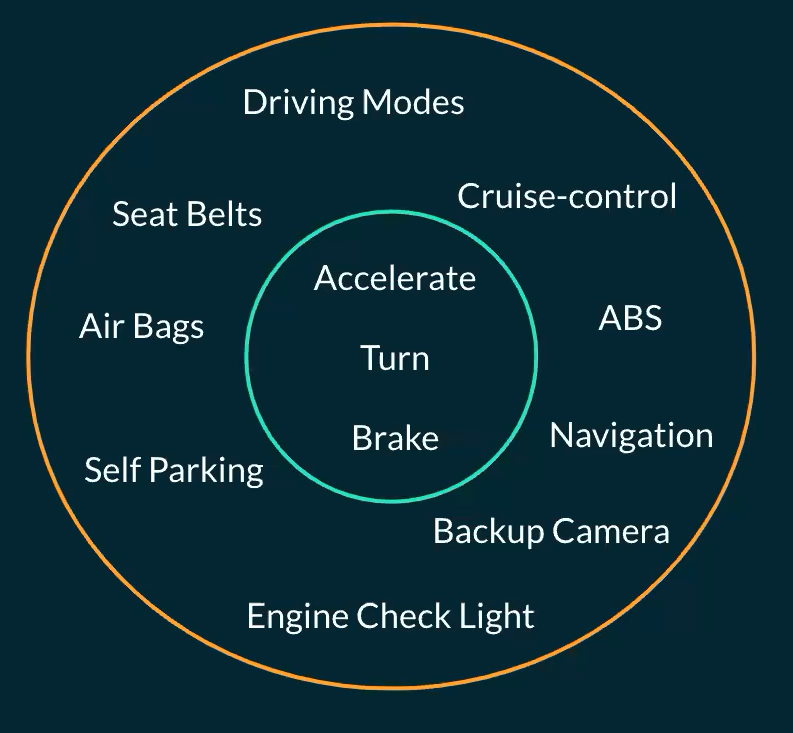
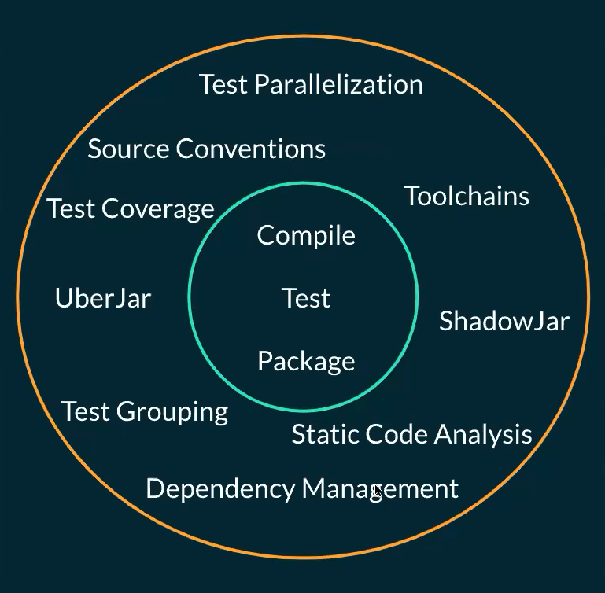
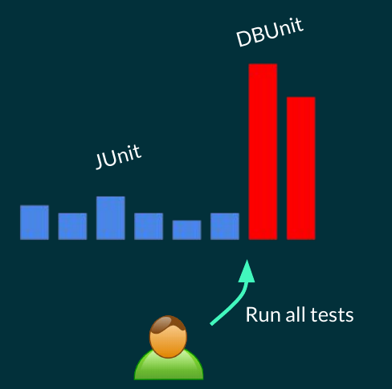
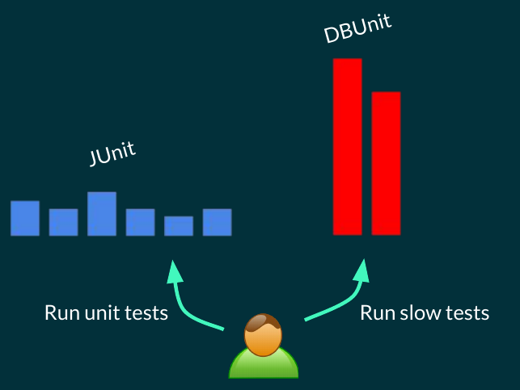

Jvm Builds#
Evolution of Build Tools#
As with everything, build tools evolve over time. if we consider a car at the beginning, it only has Accelerate, Turn and Brake which are basic things a car needs. But overtime more things are are added to the cars like Seat Belts, Self Parking, etc.

As you can see in the following image, at the beginning build tools only consisted of basic features which are a way to compile the app, run application tests and package the app.

and as time passed more features were added to build systems Dependency Management, Static code analysis and Test Grouping.

They are evolving continuously to Help us create code better and they do a lot of heavy lifting behind the scenes like dependency management.
Gradle JVM Plugins#
As you (should) know gradle by itself provide minimal configuration and most thing are added to it by applying plugins. The same goes for java and other jvm languages kotlin, groovy and scala.
In this section we check common used plugins in jvm builds for java, kotlin, groovy and scala languages.
Java Plugins#
For java there are 3 main plugins when it comes to java: java plugin, java-library plugin and application plugin
-
javapluginThis plugin is the base java plugin which provides source code locations for java which are called SourceSets.
src/main/javasrc/test/java
adds tasks like compileJava and test for compiling the source codes and running tests respectively
-
java-librarypluginThis plugins applies the java plugin automatically which means by applying it we will have everything the java plugin has.
Add api dependency configuration which will talk more about it later.
-
applicationpluginThis plugins applies the java plugin automatically which means by applying it we will have everything the java plugin has.
Adds build configuration to determine main class
Adds run and package tasks to run the application (via the main class provided) and package the app respectively
kotlin plugin#
It is org.jetbrains.kotlin.jvm plugin which is maintained by jetbrains.
This plugins applies the java plugin automatically which means by applying it we will have everything the java plugin has.
Adds sourceSets for kotlin code which can be used along side normal java sourceSets:
src/main/kotlinsrc/test/kotlin
Never put java files inside kotlin sourceSets. they will not be compiled. put them in the appropriate java sourceSet (src/main/java or src/test/java)
Adds CompileKotlin task to compile kotlin code.
java-library and application plugins can be applied along side this plugin to add more functionality.
groovy plugin#
This plugin extends the java plugin.
Adds sourceSets for kotlin code which can be used along side normal java sourceSets:
src/main/groovysrc/test/groovy
Adds CompileGroovy task to compile groovy code.
Can be used along side java.
java-library and application plugins can be applied along side this plugin to add more functionality.
scala plugin#
This plugin extends the java plugin.
Adds sourceSets for kotlin code which can be used along side normal java sourceSets:
src/main/scalasrc/test/scala
Adds CompileScala task to compile scala code.
Can be used along side java.
java-library and application plugins can be applied along side this plugin to add more functionality.
Source Organization#
SourceSets are configurations which are provided by the plugins in order to logically group sources. Basically they tell gradle where our source codes are.
By default there are 2 sourceSets: main and test. It is possible to change the default location of source files (check here) but it is recommended to use the default ones.
How are sourceSets useful?#
In order to answer these question we check these two scenarios:
- Handle Generated Source Codes
- Running Expensive Tests
Handling Generated Source Codes#
Some tasks in our projects generate code dynamically (like annotation processors). It is recommended not to push these codes in source control and put them under build/generated.
Why shouldn't we add generated sources to source control?
-
Redundency & Size: Generally size of generated sources is large and is easily reproducable. This means the Repository size is increased unnecessarily.
-
Merge conflicts: These files, especially if they change frequently, can lead to an increased number of merge conflicts in version control systems. This can happen when different developers generate slightly different versions of these files on their local machines.
-
Reproducibility: If generated files are included in version control, there's a risk that builds on different machines might rely on slightly different versions of these files, leading to inconsistencies.
-
Maintainabiliy: By not tracking these files in version control, you ensure that your repository only contains the essential source files that developers need to work with. This makes the repository cleaner and more maintainable.
For This Reason we put the generated source under build/generated/sources directoru and add it as a sourceSet to gradle so it automatically looks in those folder for sources.
In order to add a location to a sourceSet we do the following:
sourceSets {
main {
java {
srcDir("<path>")
}
}
}
This path is static and if the task which generates the code, changes it then we must change it here as well (also we need to remember to execute that task before the compile, so sources are generated) but we can use inferred task dependency to avoid that:
sourceSets {
main {
java {
srcDir(tasks.named("someTask"))
}
}
}
Now by doing this, we automatically use the correct location if it is changed, also someTask task is automatically executed before the compile task so source generation is done.
In the following example we copy sources from a folder to the build folder (we assume these sources are generated with ai):
tasks.register<Copy>("generateMlCode") {
from(rootProject.layout.projectDirectory.dir("mlCodeGenTemplate"))
into(layout.buildDirectory.dir("generated/sources/mlCode"))
}
sourceSets {
main {
java {
srcDir(tasks.named("generateMlCode"))
// Note: DO NOT do the following
srcDir(layout.buildDirectory.dir("generated/sources/mlCode"))
}
}
}
Running Expensive Tests#
Unit tests must execute fast, becuase developers run them frequently after small changes to verify the tests. Now if running these tests takes alot of time, developers might not run them as often. (Slow tests are database tests or tests with network requests, etc)

By defining a separate sourceSet for expensive tests allows us to run fast tests separatelt from them and run expensive tests when needed.

Junit Tags
If junit is the test framework, we can use test tags to run parts of tests not all of them. but not all test framework provide this feature.
Using separate sourceSet has another benefit: Expensive tests require different dependencies which we can only add to their sourceSet alone and fast tests do not have those dependencies
Android Framework tests
In android for tests related to android framework which needs an android emulator to execute, they have defined a separate sourceSets called androidTest.
SouceSets: More than Just Sources#
Beside Source Locations, there are more information within a sourceSet:
- Dependencies
- Classpath for compilation and runtime
- Input classes: Where are our sources?
- Impl configuration: What configuration to use to add a dependency to it.
- Output classes: Where are java class bytecodes
Using the following code, you can findout about these informations:
1 2 3 4 5 6 7 8 9 10 11 12 13 14 15 16 17 18 19 20 21 22 23 24 25 26 27 28 29 30 31 32 33 34 35 36 37 38 39 40 41 42 43 44 45 46 47 48 49 50 51 52 53 54 55 56 57 58 59 60 61 62 63 | |
Note: Android SourceSets have slightly different API
Define Additional SourceSets#
We define addional sourceSets to manage code that is logically independent (e.g test types). - Since test frameworks may have different dependencies and classpaths, we define addtional sourceSets for them to executes different test types separately.
Creating a sourceSet is easy as follows:
sourceSets.create("srcSetName")
And after this, if we run sourceSetsInfo tasks, then we will see this sourceSet in the list as well, and we can use it's sepecific dependency configuration to add a dependency to it.
Now for example let's consider a extra sourceSet which has a main method, let's define a task similir to run to run this sourceSet:
import org.joda.time.LocalTime;
public class Extra {
public static void main(String[] args) {
System.out.println("Running Extra: " + LocalTime.now().toString());
}
}
val extraSrcSet = sourceSets.create("extra")
dependencies {
"extraImplementation"("joda-time:joda-time:2.11.1") //(1)!
}
tasks.register<JavaExec>("runExtra") { //(2)!
classpath = extraSrcSet.output + extraSrcSet.runtimeClasspath //(3)!
mainClass.set("Extra")
}
- extraImplementation is the output of
extraSrcSet.implementationConfigurationName - JavaExec is a predefined task type which requires classpath and mainclass to be set. For more task types check here.
- For classpath two values are concatenated:
- sourceSet output so we have access to .class files inside extra package (as well as declare an inferred dependency on Compile task of this sourceSet, so before running this task, extra files are compiled first)
- runtimeClasspath because we need the declared dependencies to run the jar file.